Analiza rješenja · JOI Spring Camp 2020 · Dan 3
Zalutala mačka
O ovom članku
Tekst je prijevod službene japanske prezentacije rješenja, preoblikovan u članak. Slajdovi su ugrađeni kao slike; natpis pod svakim slajdom je prijevod teksta na njemu. Dijelovi označeni kao trenerska napomena nisu u izvornoj prezentaciji — dodani su da popune korake koje slajdovi preskaču ili samo skiciraju.
Slajdovi
Uvod i sažetak zadatka
izvorni slajdovi 1–3
-
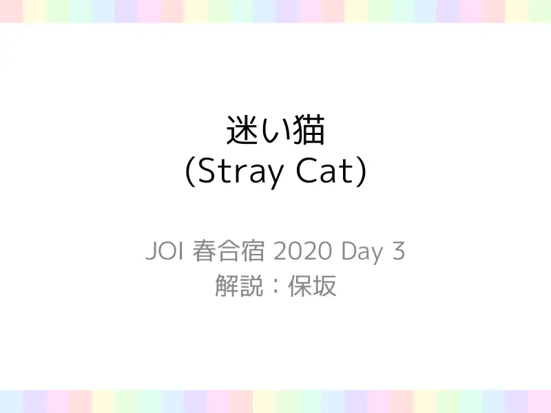
1Naslovni slajd: Zalutala mačka (Stray Cat), JOI Spring Camp 2020, dan 3. Analiza: Hosaka. -
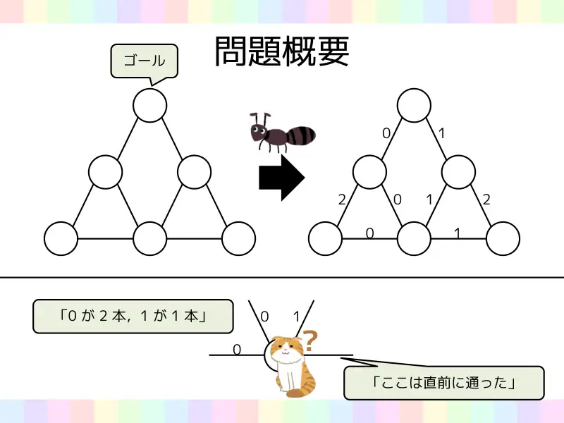
2Sažetak zadatka na primjeru. Mačka stoji u vrhu, zna da je jednom cestom „upravo došla” (označeno upitnikom) i vidi samo brojeve oznaka ostalih cesta: „dvije ceste s 0, jedna s 1”. Cilj je stići do vrha označenog kao cilj (naselje $0$). -
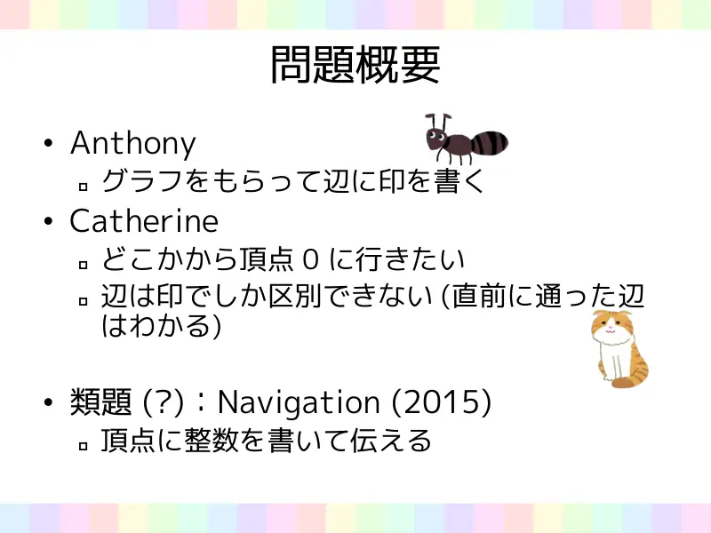
3Sažetak: Anthony dobiva graf i piše oznake na bridove. Catherine želi iz nepoznatog vrha stići u vrh $0$, a bridove razlikuje samo po oznakama (zna jedino kojim je bridom upravo došla). Srodan zadatak: Navigation (JOISC 2015) — ondje se brojevi pišu na vrhove.
← → tipke ili klik na sliku
Dva bitno različita dijela zadatka
Slajd
izvorni slajd 4
-
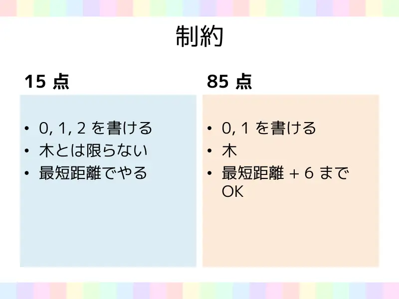
4Podjela ograničenja. 15 bodova: smiju se pisati oznake $0, 1, 2$; graf nije nužno stablo; mora se ići najkraćim putem ($B = 0$). 85 bodova: smiju se pisati samo $0$ i $1$; graf je stablo; dopušteno je najkraći put $+\,6$ koraka (odnosno $+\,12$ u podzadatku 6).
Podzadaci se dijele na dva režima: s tri oznake trebamo točan smjer u svakom vrhu, a s dvije oznake smijemo malo lutati, ali samo na stablu. Za svaki režim ideja je drugačija.
Tri oznake, opći graf podzadaci 1–4, 15 bodova
Koraci algoritma
Od stabla do općeg grafa s ostacima modulo 3
izvorni slajdovi 5–8
-
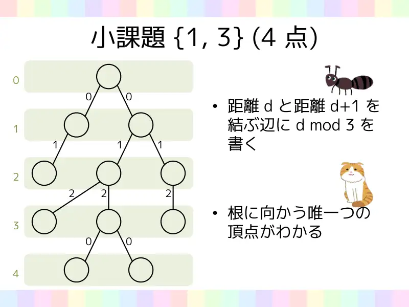
5Podzadaci {1, 3} (4 boda), stablo. Bridu koji spaja vrh na udaljenosti $d$ i vrh na udaljenosti $d+1$ (od korijena $0$) napiši $d \bmod 3$. Slojevi na slici: $0, 1, 2, 3, 4$; oznake redom $0, 1, 2, 0$. U svakom vrhu jedinstveno je određen brid prema korijenu. -
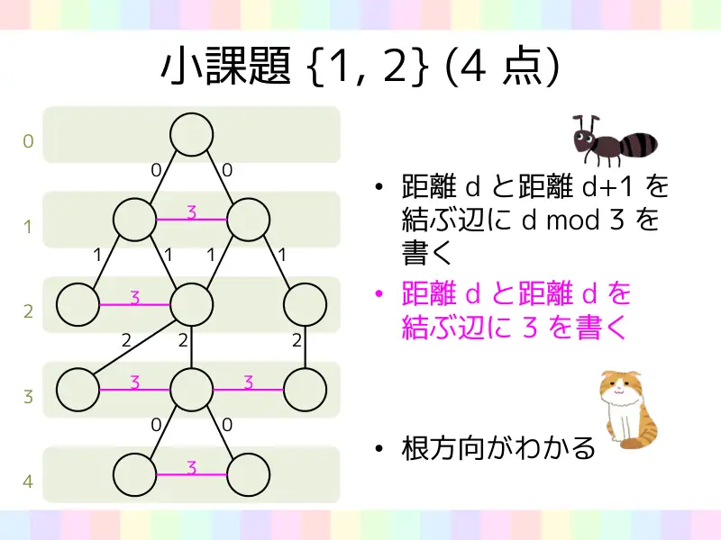
6Podzadaci {1, 2} (4 boda), opći graf s 4 oznake. Bridu između udaljenosti $d$ i $d+1$ napiši $d \bmod 3$; bridu između dva vrha iste udaljenosti $d$ (ružičasti, vodoravni) napiši $3$. Smjer korijena se opet prepoznaje. -
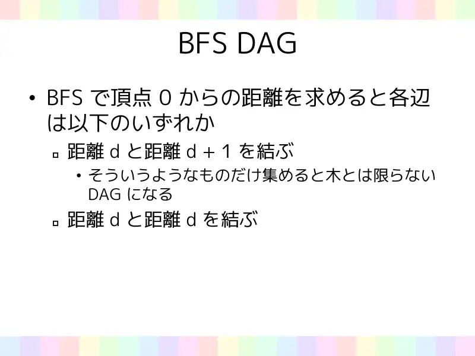
7BFS DAG. Kad BFS-om izračunamo udaljenosti od vrha $0$, svaki brid je jedne od dvije vrste: spaja udaljenosti $d$ i $d+1$, ili spaja dva vrha udaljenosti $d$. Skupimo li samo bridove prve vrste, ne dobivamo nužno stablo, nego DAG (usmjeren aciklički graf) — ali svaki vrh ima bar jedan brid prema gore. -
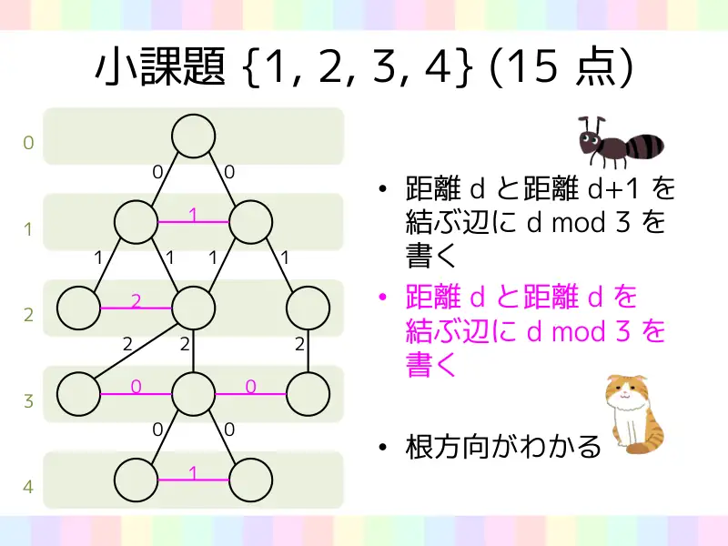
8Podzadaci {1, 2, 3, 4} (15 bodova). Bridu između $d$ i $d+1$ napiši $d \bmod 3$, a bridu između dva vrha udaljenosti $d$ napiši također $d \bmod 3$. Vodoravni bridovi tako dobivaju istu oznaku kao bridovi prema djeci — a smjer prema korijenu i dalje se prepoznaje.
← → tipke ili klik na sliku
Dvije oznake, stablo podzadaci 5–7, 85 bodova
Slajd
izvorni slajd 9
-
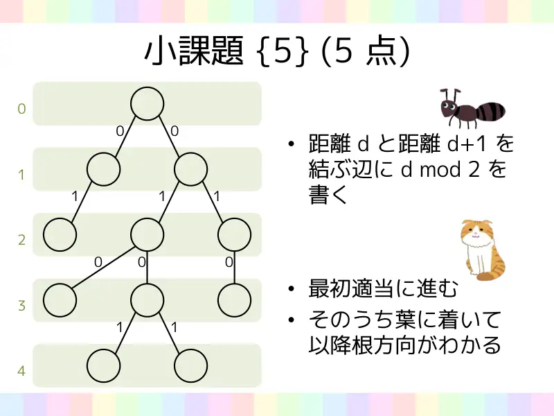
9Podzadatak {5} (5 bodova). Bridu između udaljenosti $d$ i $d+1$ napiši $d \bmod 2$. Catherine na početku ide bilo kuda; s vremenom stiže u list, a od tada zna smjer korijena. (Rezerva $B = 2N$ dopušta da prošeta cijelim stablom.)
Slajdovi
Gdje je problem i kako ga riješiti na putu
izvorni slajdovi 10–11
-
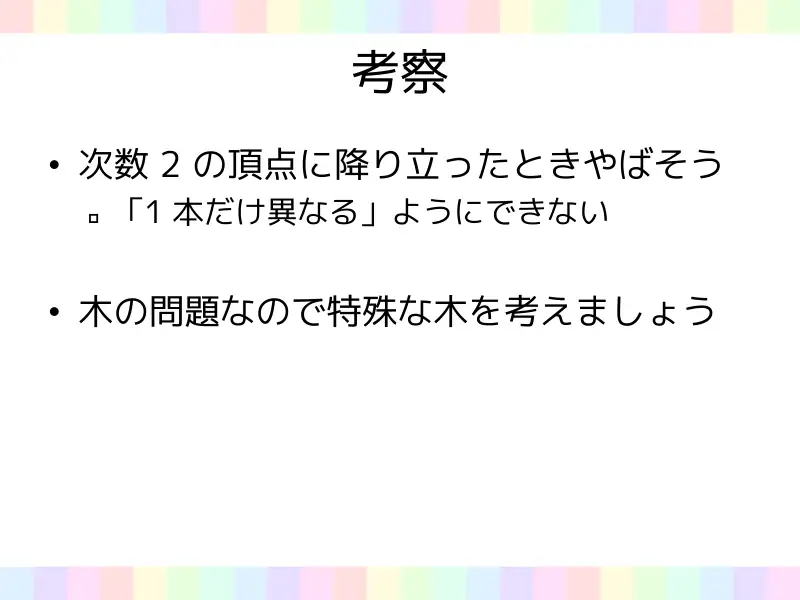
10Razmatranje. Opasno je kad se spustimo u vrh stupnja $2$: ne možemo napraviti da je „točno jedan brid drugačiji”. Zadatak je na stablu, pa pogledajmo posebna stabla — put. -
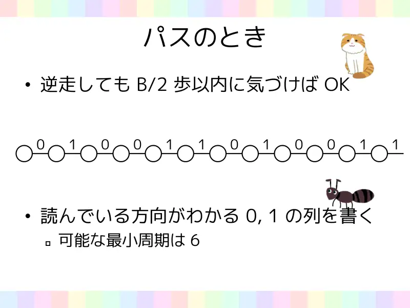
11Kad je stablo put. Ako krenemo unatrag, dovoljno je to primijetiti unutar $B/2$ koraka. Zapišimo na bridove niz nula i jedinica iz kojeg se vidi u kojem se smjeru čita: na slici $0\,1\,0\,0\,1\,1\,0\,1\,0\,0\,1\,1\ldots$ Najmanji mogući period takvog niza je $6$.
← → tipke ili klik na sliku
Koraci algoritma
Kombiniranje: lanci u općem stablu
izvorni slajdovi 12–13
-
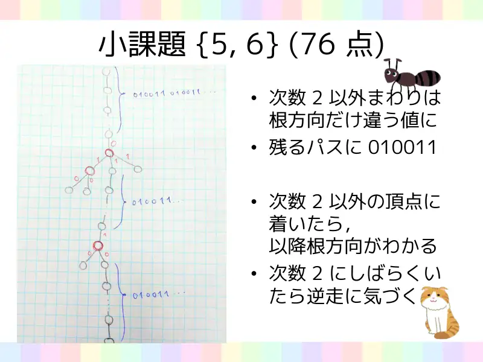
12Podzadaci {5, 6} (76 bodova). Oko vrhova stupnja $\ne 2$: samo brid prema korijenu ima drugačiju vrijednost od ostalih. Na preostale lance (vrhove stupnja $2$) upiši $010011$. Kad Catherine stigne u vrh stupnja $\ne 2$, od tada zna smjer korijena; ako je neko vrijeme u vrhovima stupnja $2$, primijeti da ide unatrag. Na slici (ručna skica): crveni vrhovi su stupnja $\ge 3$ s oznakama $0/1$ oko njih, plavim su označeni lanci s nizom $010011\,010011\ldots$ -
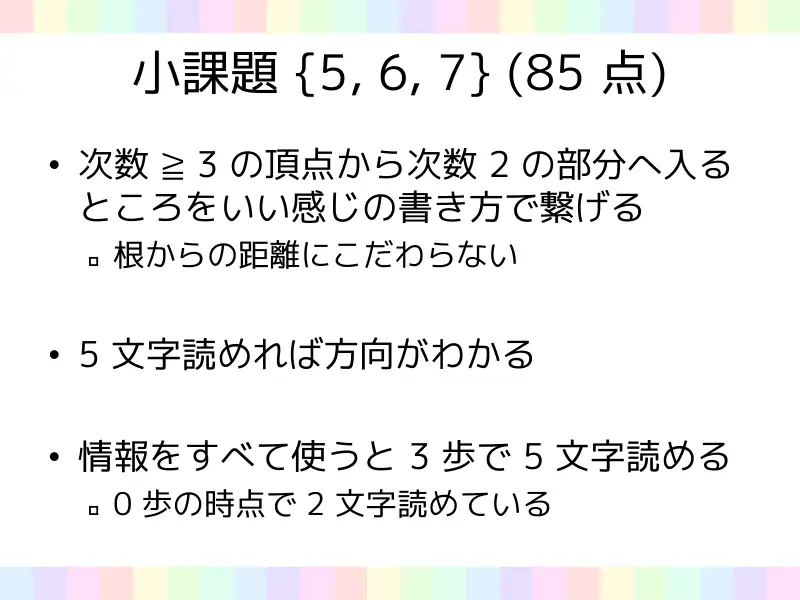
13Podzadaci {5, 6, 7} (85 bodova). Prijelaz iz vrha stupnja $\ge 3$ u dio stupnja $2$ treba „lijepo” povezati s upisom na lancu; ne inzistiraj na udaljenosti od korijena. Ako se može pročitati $5$ znakova, smjer je poznat. Iskoristi li se sva informacija, $5$ znakova se pročita u $3$ koraka: u nultom koraku već su poznata $2$ znaka.
← → tipke ili klik na sliku
Slajd
izvorni slajd 14
-
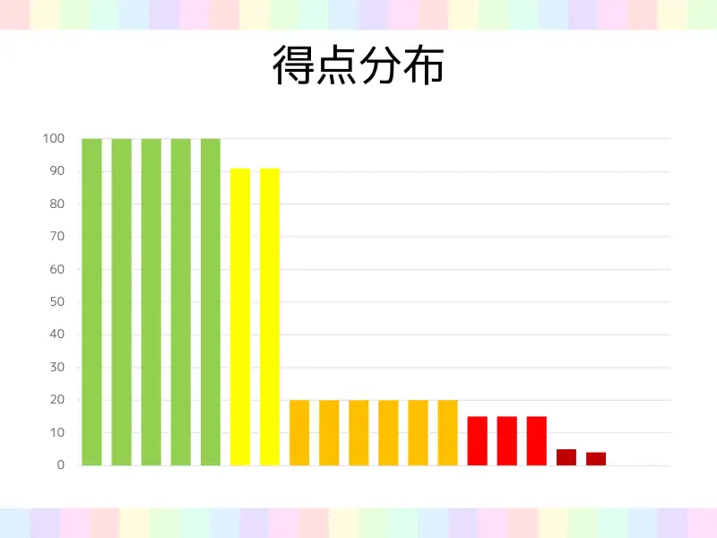
14Distribucija bodova sudionika kampa (histogram od $0$ do $100$).
Sažetak
- Tri oznake: BFS udaljenosti i ostaci modulo $3$ — u ciklusu ostataka smjer korijena je oznaka koja je „prethodnik” druge viđene oznake. Radi i na općim grafovima jer vodoravni bridovi dobivaju istu oznaku kao bridovi prema dolje.
- Dvije oznake na stablu: u vrhovima stupnja $\ne 2$ roditeljski brid je jedinstveno obojen; lanci nose periodični niz $010011$ iz kojeg se nakon $5$ znakova (tj. $3$ koraka) vidi smjer, pa lutanje košta najviše $6$ koraka.